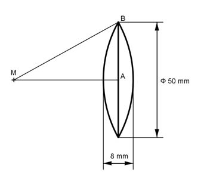

Aufgabe 383 Wie groß ist die Masse m der symmetrischen Linse bei einer Dichte von 3,1 g/cm3?

Satz von Pythagoras im Dreieck MAB: MB = r MA = r - 8/2 = r - 4 AB = 50 mm/2 = 25 mm r2 = (r - 4)2 + 252 r2 = r2 - 8 * r + 16 + 625 |-r2 0 = - 8 * r + 641 |+8 * r 8 * r = 641 |:8 r = 80 mm Volumen V von 2 gleich großen Kugelabschnitten: h = 8 mm/2 = 4 mm л V = 2 * --- * h2 * (3 * r - h) 3 л V = 2 * --- * 42 * (3 * 80 - 4) mm3 = 3 = 7 904 mm3 = 7,9 cm3 m = V * ρ = 7,9 cm3 * 3,1 g/cm3 = 24,5 g